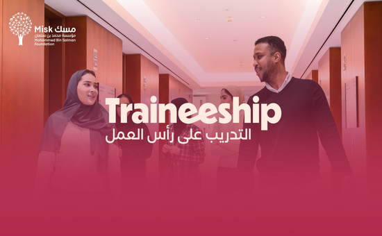
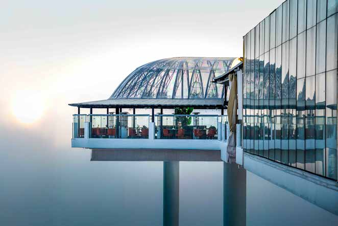
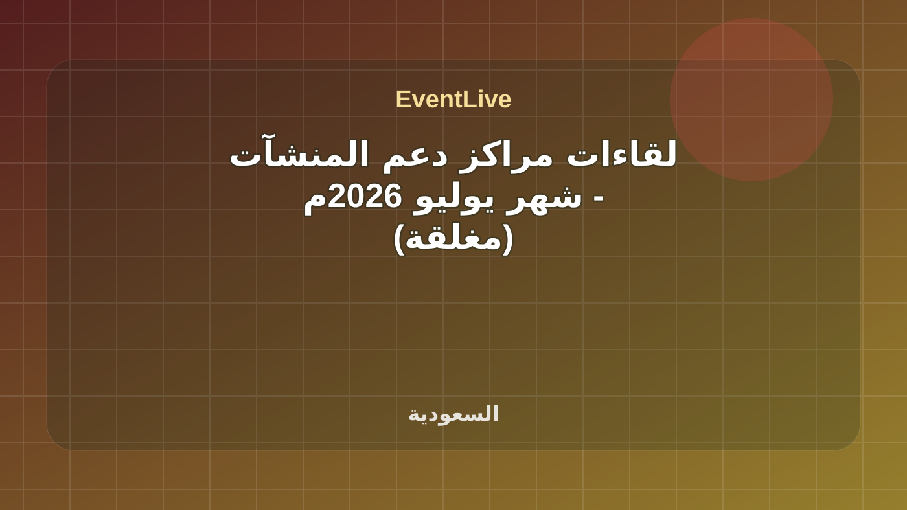
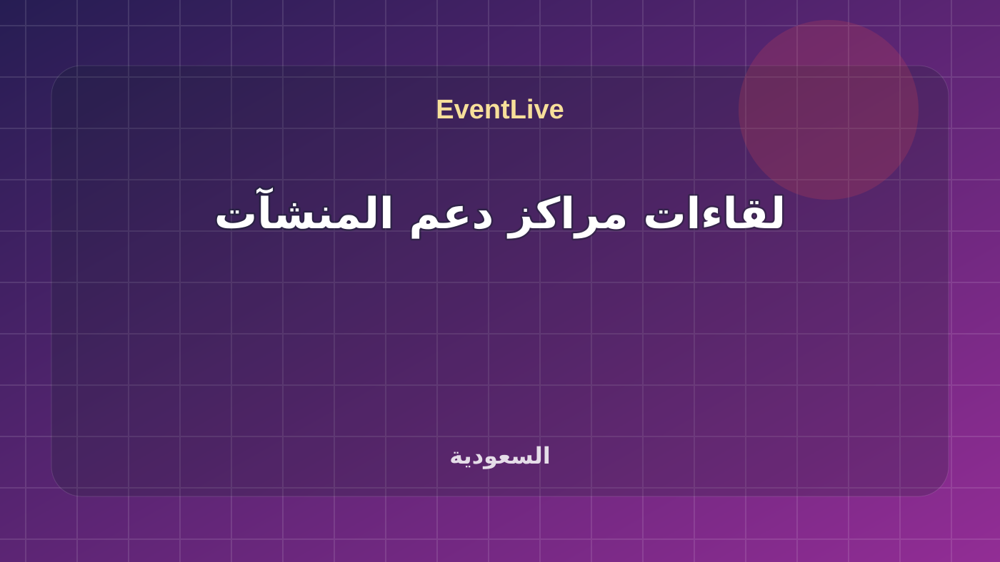
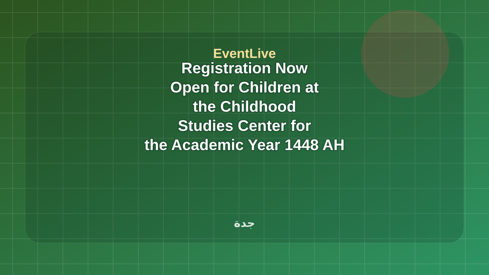
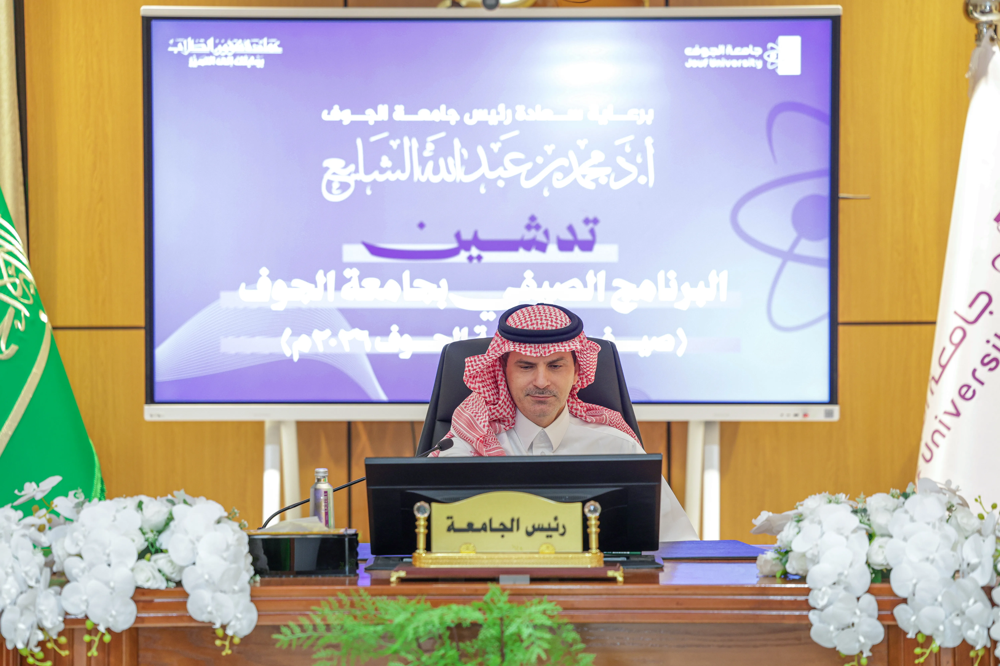
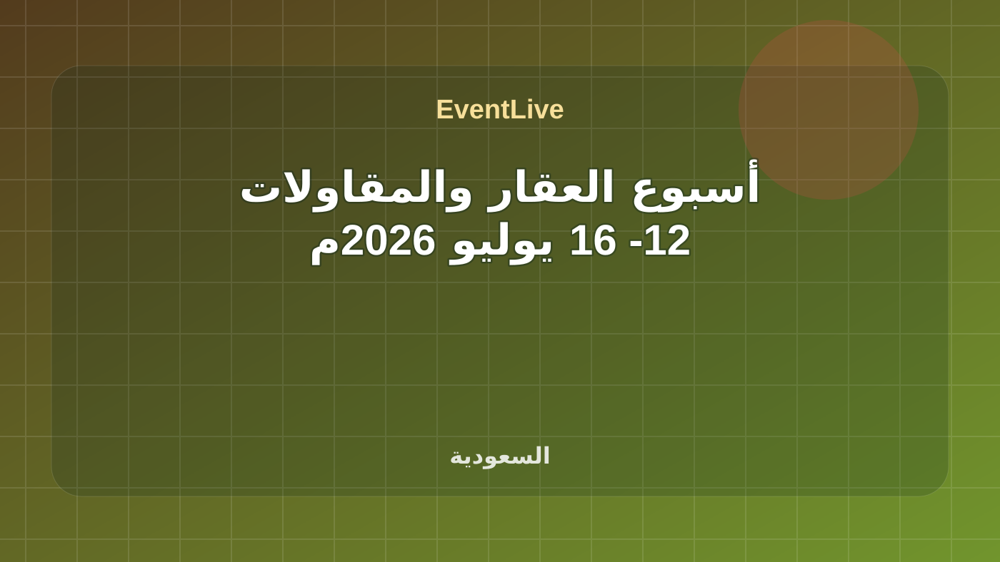
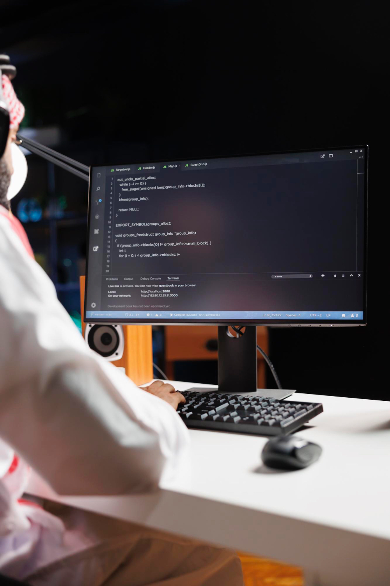
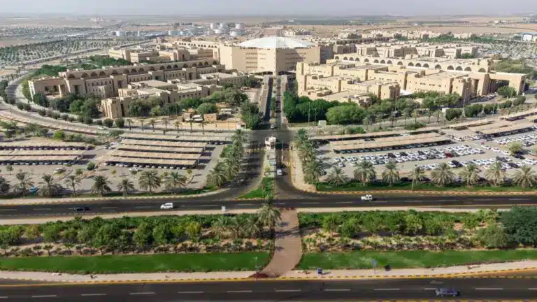
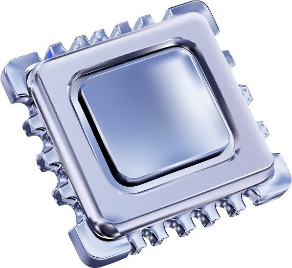

تابع طلاب وخريجون
هذه الروابط تتحدث مع كل بناء وتعرض الفعاليات القادمة والجارية لهذا السياق فقط.
طلاب وخريجون في EventLive مع الفعاليات القادمة والجارية والمنتهية ومصدر كل فعالية.
هذه الروابط تتحدث مع كل بناء وتعرض الفعاليات القادمة والجارية لهذا السياق فقط.
The Misk Local Traineeship Program connects promising Saudi talent with employers, providing hands-on experience, career mentorship, and high-quality opportunities that enhance job readiness and support a confident transition into the workforce. المصدر الرسمي: Misk Hub.

The Misk Local Traineeship Program connects promising Saudi talent with employers, providing hands-on experience, career mentorship, and high-quality opportunities that enhance job readiness and support a confident transition into the workforce. المصدر الرسمي: Misk Hub.
تفاصيل الحضور
منطقة سياحية تجمع الطبيعة الخابة، وااجواء الترفيهية بمطلا على أبها، وساحة فنونٍ بطابعٍ عسيري، ومقاهي ومطاعم في أجواءٍ راقية.
تفاصيل الحضور
تقدم مراكز دعم المنشآت العديد من الأنشطة المتخصصة لدعم المنشآت ورواد الأعمال، وذلك من خلال استقطاب المتخصصين في مجالات متعددة لمساعدة رواد الأعمال والتجار لبدء مشاريعهم ولتطوير نماذج عمل للتّمكن من استمرارية أعمالهم. مكان اللقاء: مراكز دعم المنشآت (الرياض - جدة - الخبر - المدينة المنورة - افتراضي) للاطلاع على خطوات التسجيل في اللقاءات والفعاليات اضغط هنا
تفاصيل الحضور
تقدم مراكز دعم المنشآت العديد من الأنشطة المتخصصة لدعم المنشآت ورواد الأعمال، وذلك من خلال استقطاب المتخصصين في مجالات متعددة لمساعدة رواد الأعمال والتجار لبدء مشاريعهم ولتطوير نماذج عمل للتّمكن من استمرارية أعمالهم. مكان اللقاء: مراكز دعم المنشآت (الرياض - جدة - الخبر - المدينة المنورة - افتراضي) للاطلاع على خطوات التسجيل في اللقاءات والفعاليات اضغط هنا
تفاصيل الحضورThe Communications, Space and Technology Commission (CST), in partnership with the Institute of Electrical and Electronics Engineers (IEEE), is organizing the 3rd International Research Competition on Non-Terrestrial Networks (NTN) 2026. The competition invites researchers, graduate students, and recent PhD graduates from around the world to submit innovative research on non-terrestrial networks, future wireless communications, and the integration of terrestrial and non-terrestrial networks. Selected finalists will present their research during the Global Space Connectivity and Sustainability Events in Riyadh, where the winners will be announced. The competition aims to promote research and innovation in next-generation connectivity technologies and strengthen international collaboration in developing sustainable communications solutions. Register Now
تفاصيل الحضور
يقدم المعسكر تجربة تعليميّة نوعيّ من خلال مرحلتين، حيث يتعلّم الطالب في المرحلة الأولى عن فهم أساسيات السلامة والتشغيل النظامي، والتأهيل لاجتياز اختبار الرخصة التجارية (GACA Part 107)، وتقدم المرحلة الثانية من المعسكر تجربة تطبيقيّة في م... المصدر الرسمي: أكاديمية طويق.
تفاصيل الحضور
فعالية رسمية من تقويم جامعة الملك عبدالعزيز. التاريخ المعلن: 07 Jul 2026 - 29 Jul 2026. Registration Now Open for Children at the Childhood Studies Center for the Academic Year 1448 AH ضمن جامعات ومجتمع في جدة. تبدأ الفعالية ٠٧/٠٧/٢٠٢٦، ٩:٠٠ ص وتنتهي ٢٩/٠٧/٢٠٢٦، ٦:٠٠ م حسب البيانات المتاحة. تعرض الصفحة وقت الفعالية وموقعها ومصدرها وروابط التقويم والاتجاهات عند توفرها. المصدر: Saudi Universities and Technical Colleges.
تفاصيل الحضور
تطلق جامعة الجوف البرنامج الصيفي بجامعة الجوف 1447هـ – 2026م، بوصفه برنامجًا نوعيًا متكاملًا يستهدف تنمية المهارات وتطويرها، ونشر ثقافة الابتكار، وترسيخ ثقافة التطوع وخدمة المجتمع، بما يعزز دور الجامعة التنموي والمجتمعي، ويفتح مسارات واسعة لاستثمار فترة الصيف في برامج معرفية وتدريبية وتطوعية ورياضية موجهة لمنسوبي الجامعة وطلبتها والخريجين وأفراد المجتمع. ويستهدف البرنامج، الذي يمتد من شهر يوليو حتى نهاية أغسطس 2026م، أكثر من 16,000مستفيد من داخل الجامعة وخارجها، من خلال أكثر من 50 برنامجًا وفعالية نوعية، وما يزيد على 210 ساعة تدريبية مكثفة، إلى جانب مشاركة أكثر من 300 متطوع أكاديمي وطبي، وتنفيذ أكثر من 11,000 ساعة تطوعية معتمدة، إضافة إلى أكثر من 10 بطولات رياضية صيفية.
تفاصيل الحضور
هي أسابيع تنظمها الهيئة العامة للمنشآت الصغيرة والمتوسطة "منشآت" ممثلة بمراكز دعم المنشآت، للتركيز على قطاعات الأعمال في المملكة، ونهدف من خلالها إلى التعريف بالفرص الاستثمارية والمبادرات الحكومية التي تخدم القطاعات المختلفة للمنشآت الصغيرة والمتوسطة، وتشهد هذه الأسابيع دعوة للمنظومات والمنشآت العاملة في هذه القطاعات لعرض تجاربهم الناجحة ومسيرتهم في التغلب على التحديات التي واجهتهم. للاطلاع على خطوات التسجيل في اللقاءات والفعاليات اضغط هنا
تفاصيل الحضور
يهدف معسكر الهندسة إلى إعداد مهندسين قادرين على بناء تطبيقات برمجية متكاملة وتطوير أنظمة AI متقدمة وتشغيلها في بيئات الإنتاج باستخدام أحدث الممارسات الهندسية، يركّز المعسكر على دمج مبادئ Software Engineering مع تقنيات AI الحديثة مثل: LLM... المصدر الرسمي: أكاديمية طويق.
تفاصيل الحضور
فعالية عامة مدرجة في تقويم جامعة القصيم. الموعد المعلن: 12 يوليو 2026، 4:30 مساءً. انطلاق النادي الصيفي التاسع لجامعة القصيم ضمن جامعات ومجتمع في بريدة. تبدأ الفعالية ١٢/٠٧/٢٠٢٦، ٤:٣٠ م وتنتهي ١٢/٠٧/٢٠٢٦، ٦:٣٠ م حسب البيانات المتاحة. تعرض الصفحة وقت الفعالية وموقعها ومصدرها وروابط التقويم والاتجاهات عند توفرها. المصدر: Qassim University Events.
تفاصيل الحضوريهدف هذا المعسكر إلى بناء أساس قوي في هندسة الدرونز التطبيقية من خلال تغطية تصميم الدرونز وفق متطلبات ومبادئ الديناميكا الهوائية، والتصميم بالحاسب، والتحليل الهيكلي، وأنظمة الدفع، والإلكترونيات الجوية، والطباعة ثلاثية الأبعاد، إضافة إلى ... المصدر الرسمي: أكاديمية طويق.
تفاصيل الحضور
يمثل هذا المعسكر تجربة متقدمة تهدف إلى بناء قاعدة معرفية راسخة لدى المشاركين في مجالات الإلكترونيات المتقدمة، وإنترنت الأشياء، والابتكار التقني، مع التركيز على الدمج المتكامل بين المعرفة النظرية والتطبيق العملي، كما يتيح للمشاركين تطوير ... المصدر الرسمي: أكاديمية طويق.
تفاصيل الحضور
يهدف المعسكر إلى تزويد المتدربين بمهارات متكاملة تبدأ من تعلم أساسيات لغة Java وصولًا إلى بناء تطبيقات ويب احترافية و متقدمة باستخدام Spring Boot Framework، كما يعتمد المعسكر على التعلم العملي عبر مشاريع تحاكي الواقع، مع التركيز على التك... المصدر الرسمي: أكاديمية طويق.
تفاصيل الحضورمعسكر تدريبي مصمم لتزويد المطورين بالمهارات والمعرفة اللازمة لتصميم، وبناء، ونشر، وإدارة برمجيات عالية الأداء، قابلة للتطوير، وموثوقة على Google Cloud Platform, موجهة للمطورين الذين يمتلكون خبرة أساسية في البرمجة ويرغبون في الانتقال إلى ... المصدر الرسمي: أكاديمية طويق.
تفاصيل الحضوريهدف المعسكر إلى تعلم طرق البرمجة والتفكير كمبرمج في مقاربة حل المشاكل خلال تطوير المشاريع المختلفة من الفكر ة حتى تنظيم المشروع وخطوات تطورها، والتعرف على كيفية عمل الإنترنت وتطوير المواقع باستخدام إطار عمل Django; بحيث يصبح المتدرب قاد... المصدر الرسمي: أكاديمية طويق.
تفاصيل الحضورمعسكر مكثف مُصمَّم لتأهيل الخريجين وإعدادهم لسوق العمل التقني عبر ثلاثة مسارات احترافية: اختبار التطبيقات وإصدارها، وDevOps، وتطوير الخدمات الخلفية باستخدام .NET Core، يجمع المعسكر بين الجانب النظري والتطبيق العملي على أحدث التقنيات كـ D... المصدر الرسمي: أكاديمية طويق.
تفاصيل الحضور
يهدف المعسكر إلى تأهيل المشاركين بأساسيات البنية التحتية وأنظمة التشغيل من خلال أنشطة عملية تشمل الشبكات، أنظمة Windows وLinux، الافتراضية، الحوسبة السحابية، والأمن الأساسي، ويركز المعسكر على التطبيقات العملية وإدارة البيئات التقنية باست... المصدر الرسمي: أكاديمية طويق.
تفاصيل الحضور